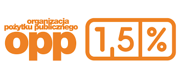

Świętokrzyskie Stowarzyszenie Pomocy
Dzieciom, Młodzieży, Dorosłym z Cukrzycą i z Innymi Schorzeniami.
25-543 Kielce, ul. Warszawska 99/42
Stowarzyszenie zostało zarejestrowane w Sądzie Okręgowym Kielce
dnia 27.03.1998 r. oraz Sądzie Rejonowym Kielce w KRS 18.06.2001 r.
NIP: 657-23-41-219, Regon: 290938922
Jesteśmy Organizacją Pożytku Publicznego od 27 marca 2006 roku.
KRS – 0000020049
Jeśli chcesz przekazać 1,5% podatku należnego na rzecz naszej organizacji we wniosku PIT wpisujemy:
- nasz numer KRS czyli 0000020049,
- wysokość wnioskowanej kwoty, czyli 1,5% kwoty należnego podatku lub ryczałtu,
- jeśli chcesz ujawnić swoje dane osobowe naszemu Stowarzyszeniu zaznacz X w pozycji „Wyrażam zgodę”.
Zebrane środki z 1,5% przeznaczamy na rzecz dzieci nieuleczalnie chorych w ramach realizacji zadań statutowych:
- edukację chorego (szkolenia, konferencje naukowe, konsultacje specjalistyczne),
- rehabilitację,
- pomoc finansową i rzeczową rodzinom ubogim z dzieckiem chorym na cukrzycę,
- organizację kolonii, turnusów zdrowotnych i spotkań integracyjnych.